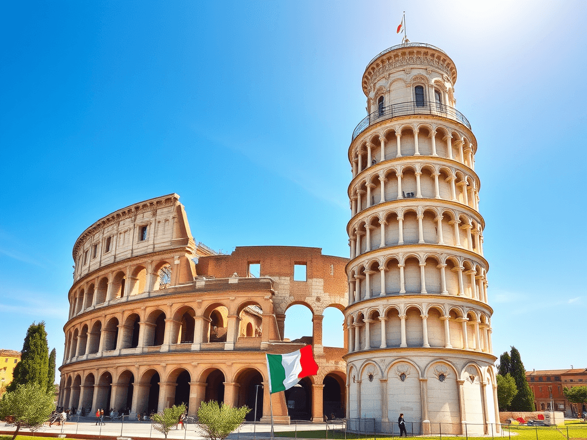
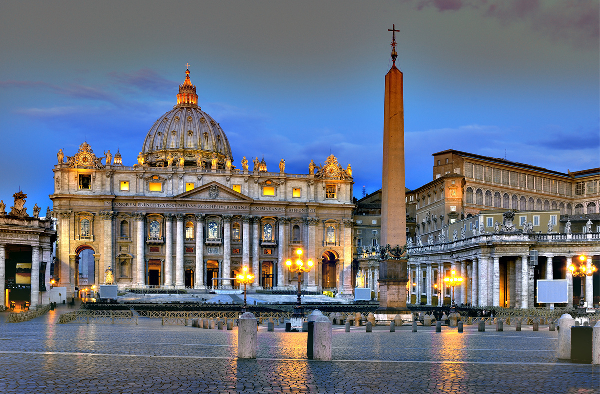
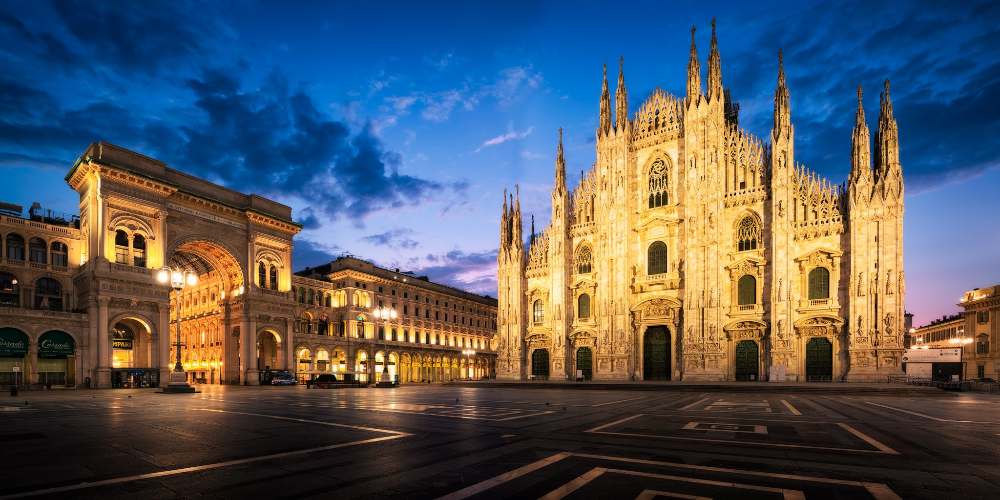
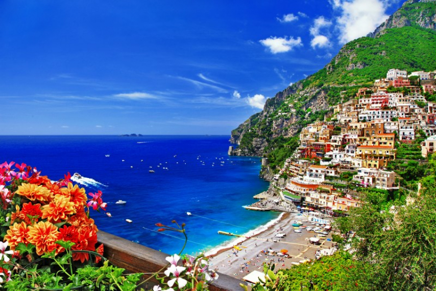
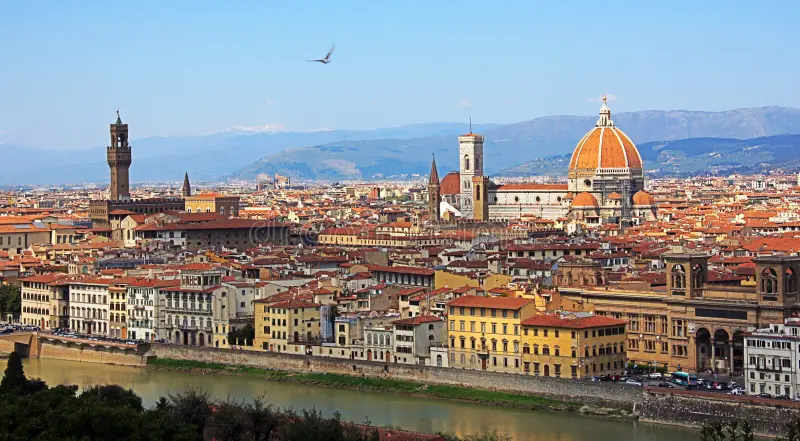
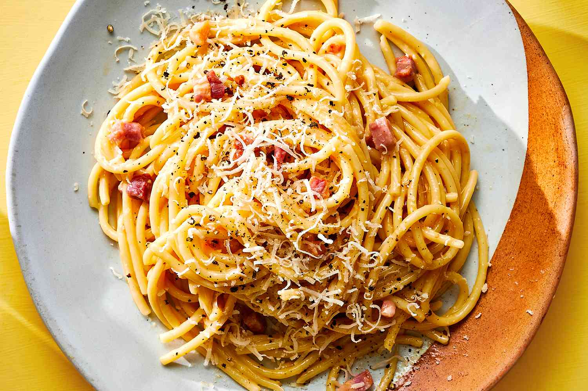
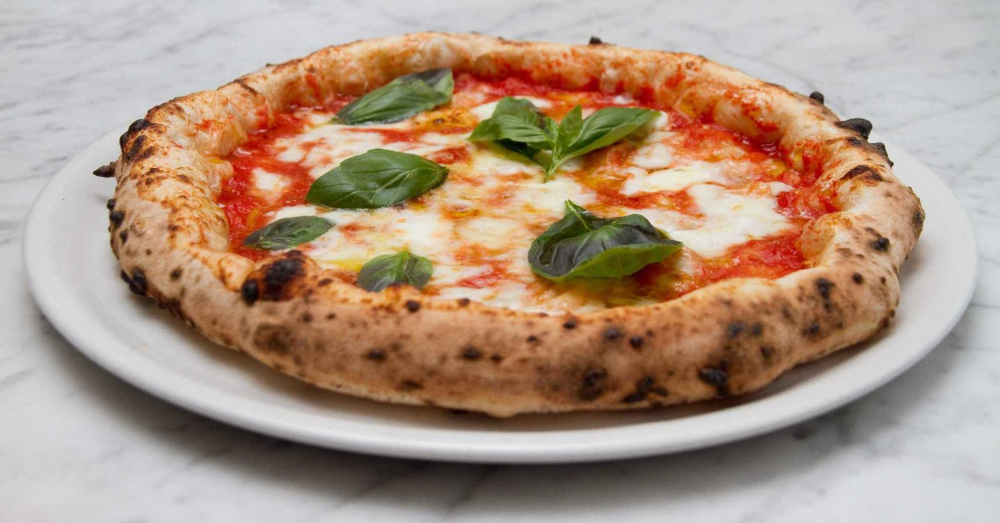
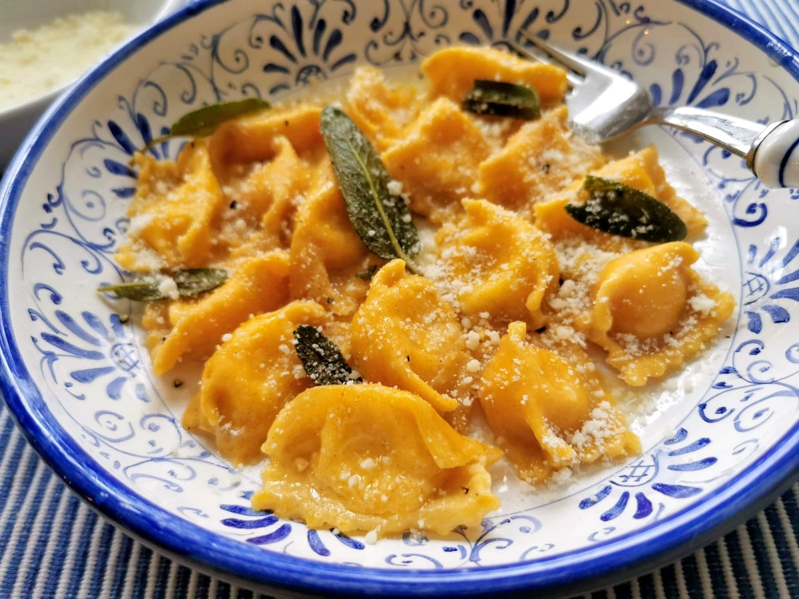
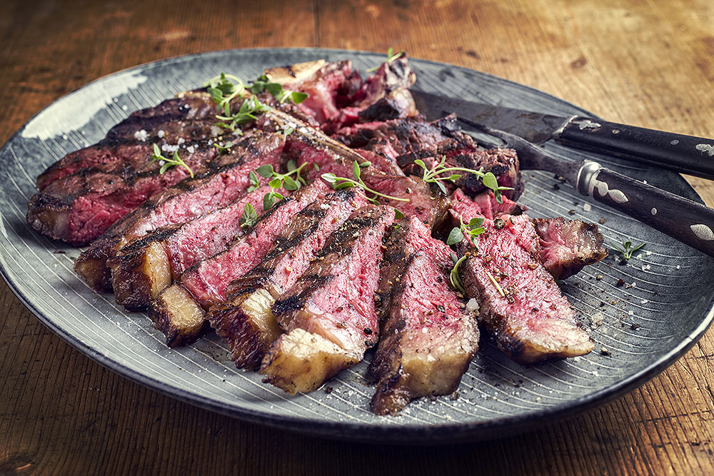
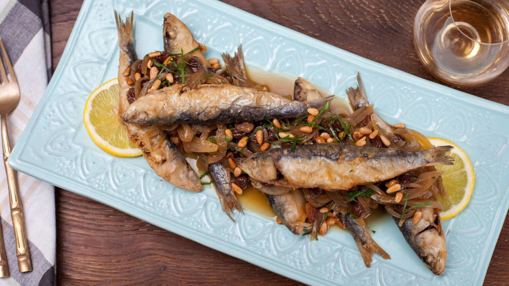

Inverno
- Dicembre
- Gennaio
- Febbraio







Pasta condita con uova, pecorino romano, guanciale e pepe nero: cremosa senza aggiunta di panna.

Risotto allo zafferano, dal caratteristico colore dorato, tradizionalmente preparato con brodo e midollo.

Pizza dall'impasto morbido e dal bordo alto, cotta ad alta temperatura e spesso guarnita con pomodoro e mozzarella.

Piccola pasta ripiena di carne e verdure, chiusa con il caratteristico pizzicotto e servita spesso con sugo d'arrosto.

Taglio di manzo con osso, spesso di razza Chianina, cotto alla griglia e servito tradizionalmente al sangue.

Sardine fritte accompagnate da cipolle stufate, aceto e uvetta: una preparazione agrodolce nata dalla cucina veneziana.